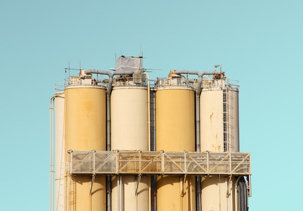
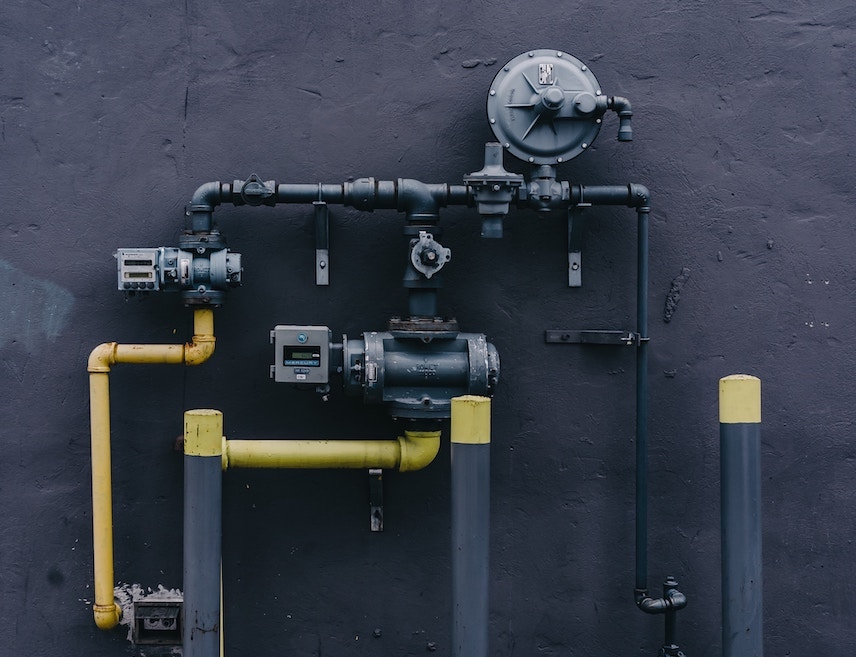

EVALUATION OF DESIGN.
DESIGN OF PROCESS EQUIPMENT & PIPING SYSTEMS.
We have been active in the area of Process & Mechanical Design, Development of Mechanical data sheets for enquiries, detailed fabrication drawings, detailed bill of quantities with material specifications, welding procedure specification & quality control plans for fabrication / testing of the following Process Equipment and Piping Systems.
We possess number of useful Software for design & engineering of process equipment, heat exchangers & piping systems as listed.
- Pressure Vessels / Process Equipment
- Storage Vessels
- Storage Tanks
- Heat Exchangers
- Reactors
- Piping Systems
- Gas Vent Silencers
- Steam Distribution Network
- Fire Fighting Systems as per TAC
DESIGN & ENGINEERING OF ELECTRICAL SYSTEMS (220KV TO 0.415KV).
- Electrical System Study
- Preparation of Single Line Diagram
- Layout of Switch Yard, Substation & Switch Rooms
- Captive Power Plant & DG based Emergency Power Plant
- Electrical System Automation
- Optimization of Electrical Systems & Layouts
- Layouts: Power, Lighting & Earthing
EVALUATION OF PROCESS SYSTEMS.
- Flow Diagrams
- Process & Instrumentation Diagrams
- Process Data Sheets
- Control Logics

LIFE ASSESSMENT.
Health and Life Assessment is conducted of existing plants to minimize the incidences and failures. Critical parts and components of pressure vessels and pipes are subjected to NDT and other metallurgical tests to establish corrosion rates, damages and material conditions at the time of study. These help in the prediction of life expectancy of these components.
All inspections are carried out as per API 510, API 570, API 653 and relevant design codes after due consideration of Risk Based Inspection guidelines. We conduct Fitness for Service Analysis of process plants, equipment, piping as per API 579 and ASME FFS-1.
We also provide technical expertise and guidance in the fields of operational and safety procedure to be followed in process industries.

TECHNICAL TROUBLESHOOTING.
Operating process plants and equipment face troubles during their operations. It required specialized analysis after plant visit and collecting information on malfunctions, recurrent damages or failures.
The causes are analysed, investigations and tests are conducted, remedial actions are suggested. Operation guidelines are reviewed and alterations recommended.

FAILURE ANALYSIS.
This helps in Failure Prevention, Proper Repairs and Life Enhancement of Piping, Vessels and Tanks. We provide orientation to damage mechanism, prevention of failures, proper repairs and enhancement of safe life of process plant components like piping systems, vessels, tanks, machineries, power systems and structures.
We undertake the supervision and inspection of welded construction, identifying defects and repair as per guidelines of relevant Codes and rules. Process Plants get benefitted to improve maintenance and profitability of plant systems.
